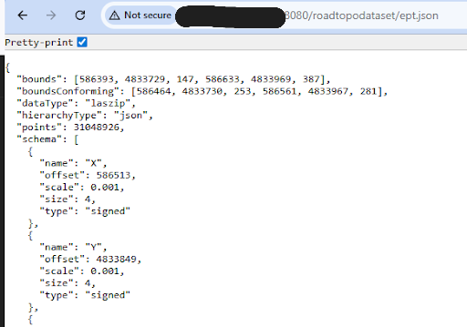
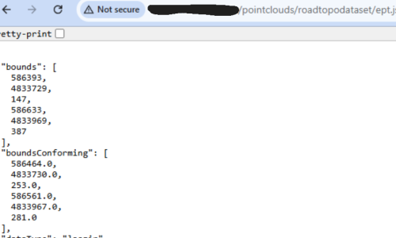
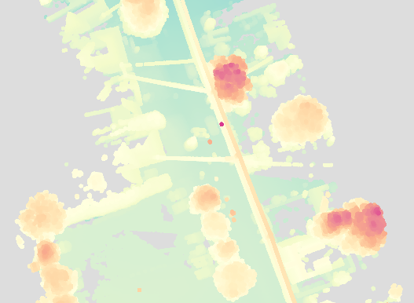

Phase 1: Research & Planning
- Overall Project Plans and Implementation Structure
- Pointcloud Display Research
- Technology Stack Selected
Phase 2: Server Setup
- Setup Roles and Permissions on Server
- Create Initial Data Transfer Protocols
Phase 3: Local Data Service
- Download and Install Required Software (Entwine, iTowns)
- Build the EPT from Example LAS
- Serve the EPT on a Local Server (Open Port)
- Setup Local Server
- Test Data Transfer

Phase 4: Public Data Service
- Public Data Server Setup (NGINX)
- Setup Server Directories/Structure
- Serve the EPT to the Public Server

Phase 5: Proper Pointcloud Viewer
- Create HTML Viewer
- Analyze Documentation
- Setup a Basic Viewer for Sample Data
- Apply to EPT/Create Final Viewer
- Test and Revise Viewer
- Create Color Scheme/Branding
- Create Controls & Display Settings
- Create and Test Loading Page
- Test & Set Default Settings
- Add Location and Default Viewing Logic

Phase 6: Authentication (Rough Plan)
- Create, Upload, and Test a Second Pointcloud
- Create Authentication System
- Integrate Authentication into Viewer
Phase 7: Final Revisions and Additions (Rough Plan)
- Integrate Location and GIS Data Into the Viewer
- Testing and Revisions - Features, Bugs, Optimizations, etc
Phase 8: Production and Deployment
- Fully Move Data to the Server
- Create and Connect Credentials, Authentication
- Create Guidelines for Management of Data